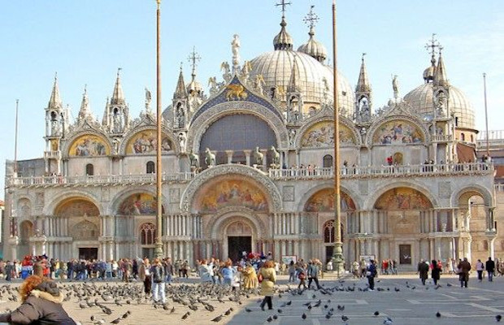
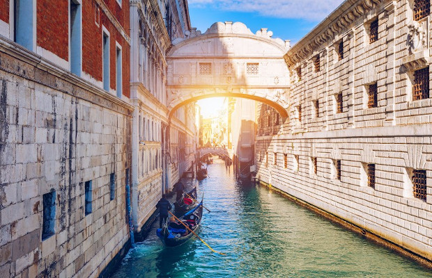
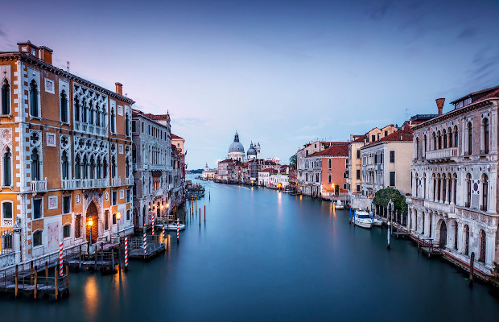
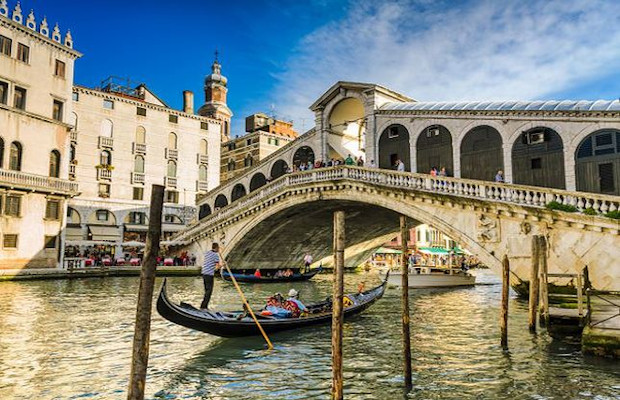
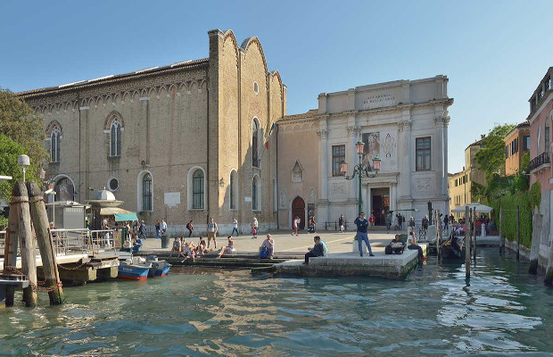

Wenecja
“Wolę być w Wenecji w jeden deszczowy dzień niż w pogodny w każdej innej stolicy” – stwierdził pisarz Herman Melville w 1857 roku. Wenecja posiada niesamowity urok: zarówno w środku zimy, gdy jest pokryta czarującą mgłą, jak i w upalne dni, gdy weneckie kanały mienią się w słońcu, a gondolierzy częstują lokalnym winem.
Bazylika świętego Marka

Bazylika św. Marka nosi imię Ewangelisty, którego szczątki Wenecjanie przywieźli w IX wieku z Aleksandrii.
Znajdująca się przy Placu św. Marka budowla stanowi świetny przykład architektury bizantyjskiej. Każdego roku przyciąga miliony turystów pragnących na własne oczy zobaczyć jej złote sklepienia oraz kryjące się w jej wnętrzu skarby, takie jak Pala d’Oro – Złoty Ołtarz czy konie z kwadrygi.
Most Westchnień

Most westchnień (Ponte dei Sospiri) to najsłynniejszy most w całej Wenecji, znany nie tylko we Włoszech, ale również na całym świecie. Zaprojektował go Antoni Contino, a budowę ukończono w 1614 roku. Trzeba przyznać, że jest on nie tylko najbardziej znany, ale również najbardziej romantyczny. Jak głosi legenda, pocałunek pod mostem, w gondoli, w blasku zachodzącego słońca gwarantuje parze dozgonną miłość.
Canal Grande

Jeśli spojrzymy na plan Wenecji, zauważymy że jest ona przedzielona na dwie części. Granicę pomiędzy dwiema częściami miasta stanowi Canal Grande, główna arteria wodna miasta.
Zbudowany w XV w, Canal Grande bierze swój początek przy dworcu kolejowym, a kończy się przy przystani San Marco. Choć w linii prostej dzieli te punkty zaledwie półtora kilometra, sam kanał osiąga długość niespełna 4 kilometrów. Jest on głęboki na około 5-6 metrów a jego szerokość wynosi od 30 do 60 m.
Turyści zwiedzający kanał najczęściej podróżują charakterystycznymi gondolami.
Most Rialto

Most Rialto czyli Ponte di Rialto to najstarszy most w Wenecji i pierwszy, który połączył oba brzegi Canale Grande. To jedna z najbardziej charakterystycznych budowli w mieście, która przyciąga rzesze turystów.
Poprzednik Ponte di Rialto stał w tym miejscu już w 1181 roku. Był to most pontonowy, zbudowany na statkach. Nazywał się Ponte della Monete, czyli Most Monet. Nazwa wzięła się od mennicy, w której wybijano monety, a która znajdowała się przy wejściu na most.
Pod mostem przepływają tramwaje wodne, gondole, łodzie-taksówki, motorówki i wodni kurierzy.
Warto wiedzieć, że Ponte di Rialto jest najcześciej fotografowanym mostem we Włoszech.
Galeria Dell'Accademia

Gallerie dell’Accademia – muzeum sztuki prezentujące głównie dzieła malarstwa weneckiego od XIV do XVIII wieku.
Zanim powstała galeria, w 1750 roku została założona przez Gian Battistę Piazzettę, Akademia Malarzy i Rzeźbiarzy.
Znajdują się tu dzieła m.in.:
Leonardo da Vinci – Człowiek witruwiański
Giovanni Battista Pittoni - Zwiastowanie
Gentile Bellini – Procesja Krzyża Świętego na placu św, Marka, Cud przy Ponte San Lorenzo
Giovanni Bellini – Ołtarz św. Hioba, Sacra conversazione Giovannelli, Pietà
Vittore Carpaccio – Przyjęcie ambasadorów, Cud Krzyża Świętego na moście Rialto, Sen św. Urszuli